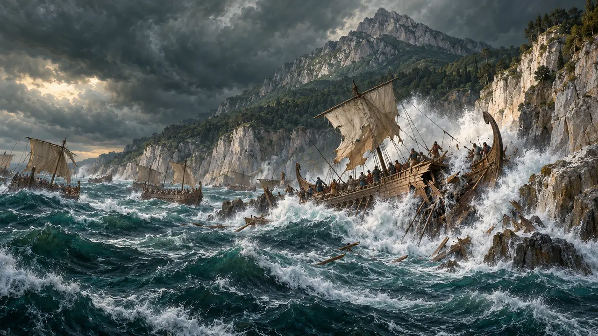
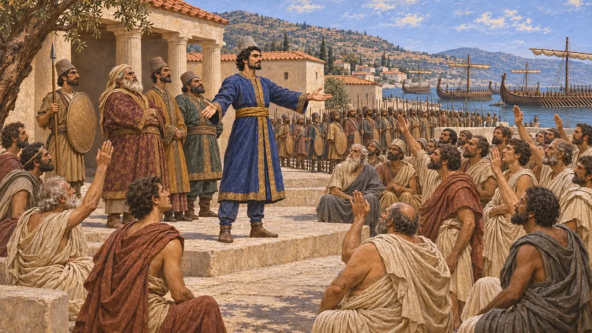
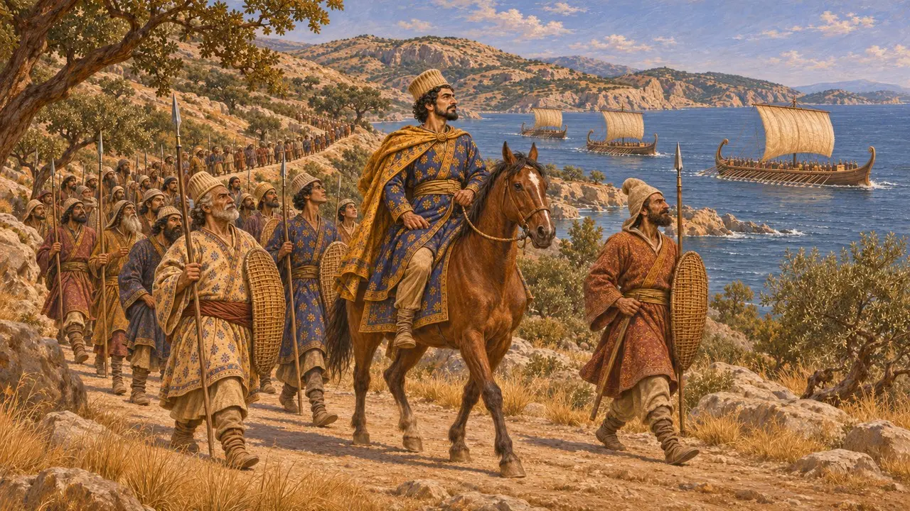
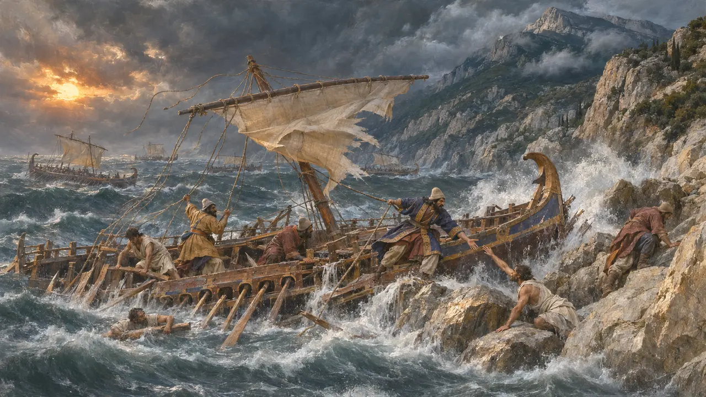
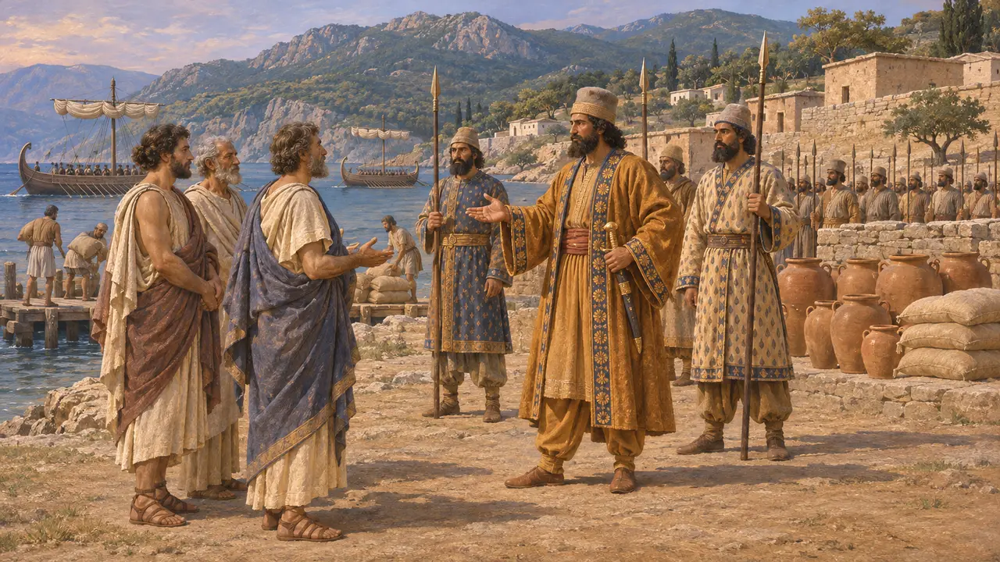
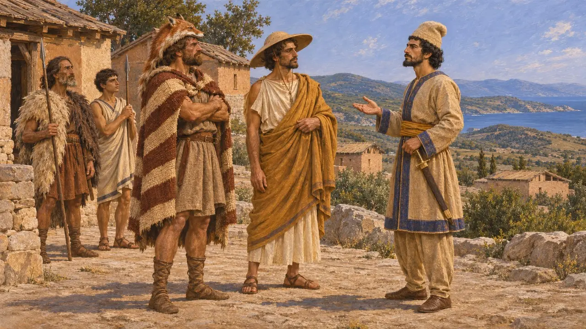

Encyclopédie › Batailles et événements

L'expédition de Mardonios et le naufrage au large de l'Athos
Campagne perse en Thrace et en Macédoine, avec une flotte brisée au large du mont Athos, 492 av. J.-C.
Dans le jeu : Niveau 9 : Le Canal
En 492 av. J.-C., Darius envoya son jeune général Mardonios franchir l'Hellespont avec une armée et une flotte, probablement pour rétablir la puissance perse dans le nord de la mer Égée après la révolte de l'Ionie. L'armée soumit les Macédoniens et une partie de la Thrace à la domination perse et la flotte prit Thasos, mais une tempête au large du mont Athos détruisit une grande partie de celle-ci. Hérodote tient cette campagne pour un échec, et le naufrage pesa sur les plans perses pour l'invasion de 480 av. J.-C.
Dans le jeu : Le jeu reprend les chiffres d'Hérodote, 300 navires et plus de 20 000 hommes, peut-être gonflés. Il dit que le naufrage a conduit au canal ; Hérodote donne cette raison mais dit aussi que Xerxès l'a fait creuser pour montrer sa puissance (7.22-24).

Mardonios prend le commandement en Ionie
Récit antiqueHérodote raconte que Darius envoya Mardonios, fils de Gobryas, jeune et récemment marié à la fille du Roi, Artozostre, vers la côte avec une grande armée et une flotte. En Ionie, il déposa les tyrans et laissa les cités se gouverner elles-mêmes sous forme de démocraties. Hérodote y voit une preuve pour les Grecs qui doutaient que les Perses eussent jamais débattu d'une telle constitution. Les historiens y voient d'ordinaire un élément du règlement qui suivit la révolte.
Herodotus 6.43

À travers la Thrace jusqu'en Macédoine
Récit antiqueMardonios franchit l'Hellespont et marcha vers l'ouest à travers la Thrace, tandis que la flotte longeait la côte à la même allure. Hérodote dit que les objectifs annoncés étaient Érétrie et Athènes, mais que le véritable but était de soumettre le plus grand nombre possible de cités grecques. La flotte prit Thasos sans combat, et l'armée ajouta les Macédoniens aux peuples déjà soumis. Les Brygoi de Thrace attaquèrent alors le camp de nuit et blessèrent Mardonios, qui parvint pourtant à les soumettre avant de retourner en Asie.
Herodotus 6.44-45

Le naufrage au large de l'Athos
Récit antiqueAlors que la flotte tentait de doubler la péninsule de l'Athos, un fort vent du nord jeta de nombreux navires sur les rochers. Hérodote affirme qu'environ 300 navires et plus de 20 000 hommes furent perdus. Certains furent tués par des créatures marines, d'autres brisés sur les rochers, et d'autres moururent de froid ou faute de savoir nager. Ses chiffres sont les seuls dont nous disposions, et les historiens pensent qu'ils sont peut-être exagérés.
Herodotus 6.44

Échec ou succès
ContestéHérodote qualifie la campagne de honte et dit que Darius remplaça plus tard Mardonios par Datis et Artapherne. Beaucoup d'historiens modernes la voient autrement : Thasos, la Macédoine et la côte thrace furent placées sous contrôle perse, ce qui fournit la base utilisée en 480 av. J.-C. Ils se demandent aussi si Athènes et Érétrie étaient des cibles en 492 av. J.-C., ou si Hérodote y a projeté la guerre ultérieure. Mardonios conserva la faveur du Roi et commanda de nouveau des armées sous Xerxès.
Herodotus 6.45, 6.94; P. Briant, From Cyrus to Alexander, 2002

Ce que montrent les sources perses
Dans les sourcesAucun texte perse ne décrit la campagne ni la tempête. L'inscription du tombeau de Darius à Naqsh-e Rostam compte Skudra parmi ses terres, avec les Yauna takabara, expression souvent rendue par « Ioniens portant le chapeau pétase ». Les deux sont généralement situés en Thrace et en Macédoine, ce qui correspondrait à une domination perse dans ces régions. Toutefois, l'inscription ne peut être datée avec précision et les localisations sont débattues.
DNa
Sources
- Herodotus 6.43-45
- Herodotus 6.94
- Herodotus 7.22-24
- DNa
- P. Briant, From Cyrus to Alexander, 2002
- A. R. Burn, Persia and the Greeks, 1962